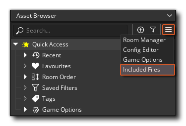
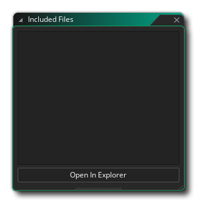
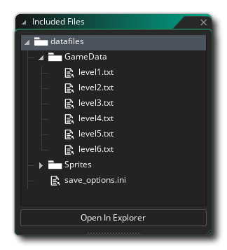
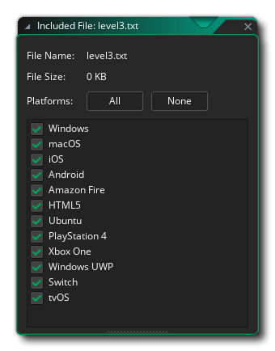
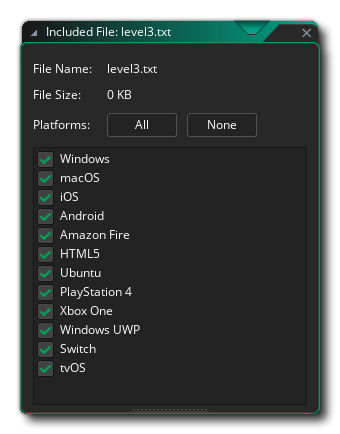

GameMaker Studio 2 is not just limited to the resources that you create within the program and you can add files to the project as Included Files so that they can then be accessed as the game is running. What files you add will depend on what you want to do, but things like default *.ini files, sprites and background images, or language text files are commonly used as included files. To add these things to your project there is an editor window that can be opened from the Asset Browser: 
Selecting this will open the Included Files Editor: 
To add a file to your resources you simply use the "Open In Explorer" button, which will open a file explorer on the datafiles folder for your project. You can then add directories and files as required and GameMaker Studio 2 will update the indluded files editor with these automatically. 
Note that all editing (renaming, organisation, etc...) should be done from the default file explorer.
Once you have added files to the editor, you can double-click
 on them to open up the File Properties: 
on them to open up the File Properties: 
This window shows the name of the file, its size on disk, and also the platforms that it should be exported to when you compile/test your game. You have buttons to select "All" or "None", or you can go down the list and check/uncheck the tragets that you want the file to be exported to, as required.
For further information on how included files are stored with your game and how they are accessed please see the section of the manual dedicated to the File System.
It is worth noting that you can include DLL (on WIndows) or DyLib
(on macOS) files as included files and then create your own custom
functions to deal with them using
external_define. These can then be used calling the
external_call function.